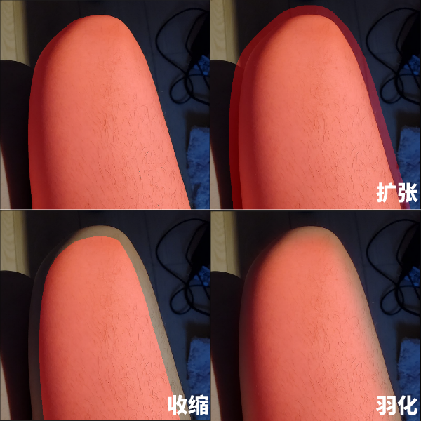

返回主页
内容识别选取 (Grabcut)
一种交互式自动化对象选择方法。
在当前模式中请按住空格键来移动缩放画布。
步骤 1
首先在图像中框选您稍后想要处理的皮肤（或者其它对象）。
如果您想重新框选，请点击“框选目标”按钮并再次框选。
您大概需要等待几秒来计算选区。
当前被选中的区域将会被标记为红色。
算法迭代次数：Grabcut算法的迭代次数，次数越高分割越精确，但也越耗时。

步骤 2
自动生成的选区通常不是很完美，所以您需要手动标记皮肤和背景。
首先，点击 减选(-) 按钮并标记背景。
温馨提示：您可以在标记前更改笔刷大小。

步骤 3
其次，点击 增选(+) 按钮并标记缺失的皮肤选区。

步骤 4
如果您想调整当前选区的边缘，您可以调整以下滑块：
* 扩张选区：使当前选区向四周扩张。
* 收缩选区：使当前选区向中心收缩。
* 羽化边缘：使当前选区边缘过渡变得平滑自然。
您可以同时扩张和收缩选区来填充选区中的缝隙（形态学闭运算）

步骤 5
现在您可以点击右侧的几个按钮将当前选区应用到总选区中了：

返回主页